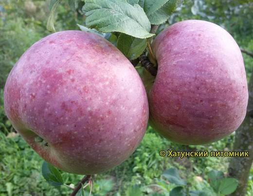
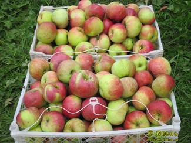
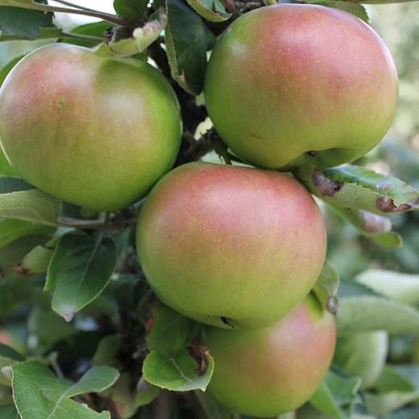
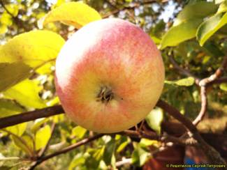

Настоящее зимнее яблоко: снятое в октябре, к Новому году только раскрывает вкус и лежит до марта–апреля.




Клик по фото — полный размер. Фотографии иллюстрируют сорт/вид; собраны из открытых источников (питомники, сортовые каталоги, Википедия).
Московское зимнее — сорт С.И. Исаева (от Антоновки обыкновенной × Уэлси), созданный специально для длительного хранения в условиях средней полосы. Плоды средней и выше средней величины, плоско-округлые, зеленовато-жёлтые с тёмно-красным полосатым румянцем.
Мякоть светлая, очень сочная, средней плотности, хорошего кисло-сладкого вкуса с лёгкой пряностью и ароматом; при дегустациях вкус оценивают высоко, но максимум он раскрывается после 1–2 месяцев лёжки. Дерево сильнорослое, с широкой округло-раскидистой густой кроной; урожайность регулярная, обильная.
| Зимостойкость | высокая |
| Устойчивость к парше | средняя |
| Самоплодность | самобесплодно — нужны опылители |
| Лёжкость | до марта–апреля при 0…+2 °C |
| Рослость | сильнорослое — планируйте место |
Советы собраны из отзывов садоводов на форумах и из практики питомников; цитаты приведены по источникам ниже.